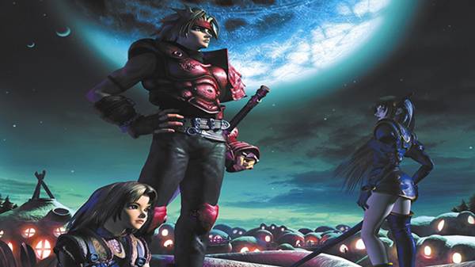

The Legend of Dragoon
The Legend of Dragoon é um jogo de videogame do gênero RPG para Playstation 1, composto por 4 CDs que foi lançado em 1999 tendo sido um grande sucesso na época, principalmente pelo seu sistema de batalha inovador.
O jogo consiste em um mundo semi aberto repleto de itens e criaturas a serem encontradas com uma mistura de estratégia com RPG de ação.
